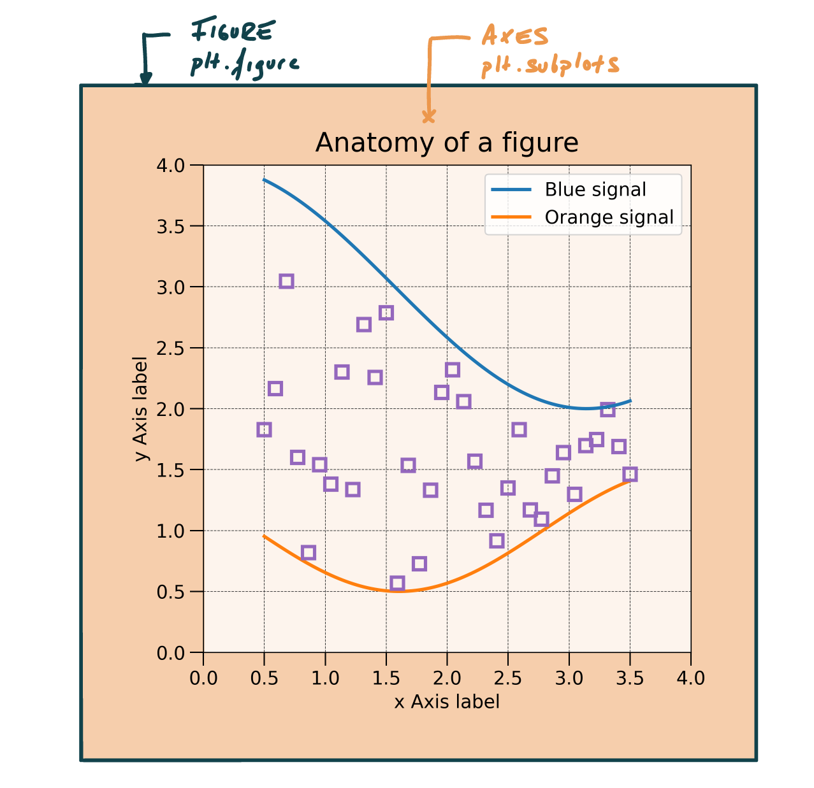
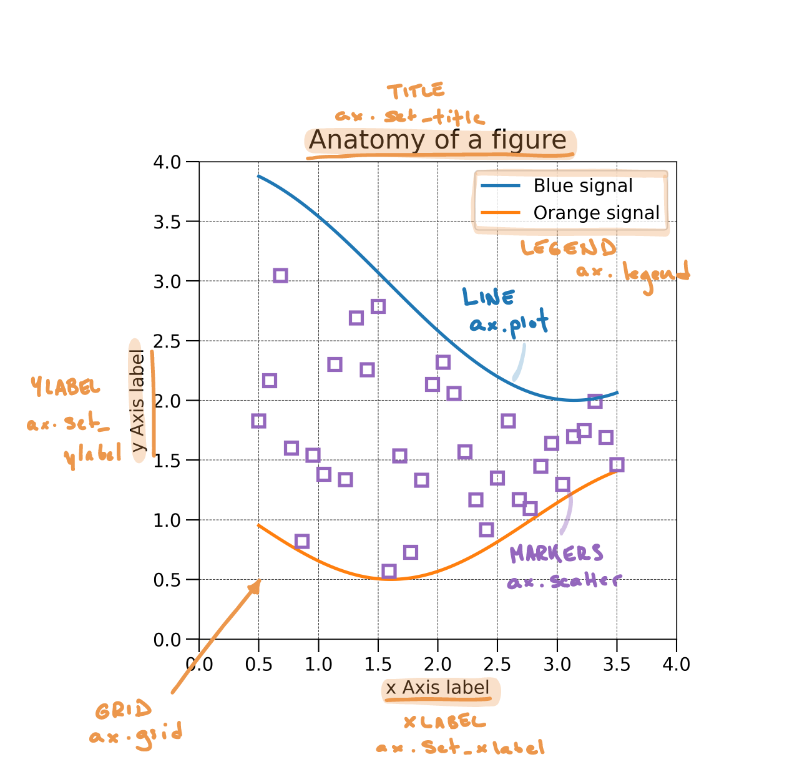
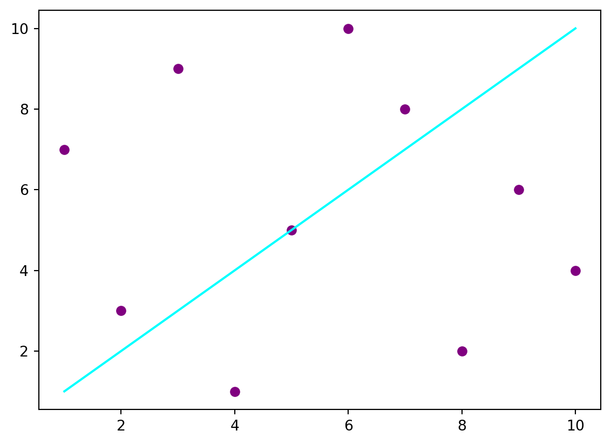
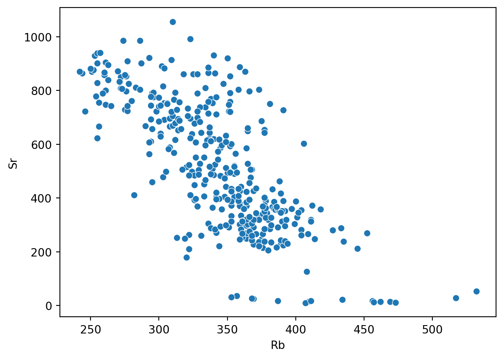

We start by importing libraries and the dataset. As in the previous class, we load the dataset using Pandas. The dataset comes from Smith, Isaia, and Pearce (2011) and contains the chemical concentrations in volcanic tephra belonging to the recent activity (last 15 ky) of the Campi Flergrei Caldera (Italy). The dataset is contained in an Excel file that contains two sheets named 'Supp_majors' and 'Supp_traces'. In Listing 1, we use the sheet_name argument to the read_excel()(doc) function to specify that we want to load the sheet containing trace elements.
import pandas as pdimport matplotlib.pyplot as pltimport seaborn as snsdf_majors = pd.read_csv('https://raw.githubusercontent.com/ELSTE-Master/Data-Science/main/Data/Smith_glass_post_NYT_data_majors.csv')df_traces = pd.read_csv('https://raw.githubusercontent.com/ELSTE-Master/Data-Science/main/Data/Smith_glass_post_NYT_data_traces.csv')
1
Load libraries Import pandas
2
Import the pyplot module from matplotlib
3
Import seaborn
4
Import the dataset specifying which Excel sheet name to load the data from
Take a minute to explore both datasets using the material from last week. Remember the cheat sheets for various Pandas functions. The typical questions you want to address are:
What columns are contained in the DataFrame?
What types of data are each columns? (e.g., integer → int(doc), decimal values →float, strings → objects )
What columns contain:
Numerical data → contain measurable quantities in numerical format and allow mathematical operations
Categorical data → represent categories or groups and describe qualities or characteristics, not quantities.
NoteQuestions
Based on your exploration of the trace elements dataset:
Is a labelled index relevant? In other words, do we want to access rows using labels (→ .loc(doc)) or using positions (→ .iloc(doc))?
Same question for columns?
CautionAnswer
There is no right or wrong! But looking at the data, using positions for index and labels for columns is probably the most logical way to go.
What columns can be used as grouping variables?
TipGood reference book
The use of this dataset is inspired by the by the book Introduction to Python in Earth Science Data Analysis: From Descriptive Statistics to Machine Learning by Petrelli (2021).
Matplotlib is the library for plotting in Python. It allows for the finest and most comprehensive level of customisation, but it take some time to get used to. You can visit Matplotlib’s gallery to get some inspiration.
Seaborn is built on Matplotlib, but provides some higher-level functions to easily produce stats-oriented plots. It looks good by default, but finer customisation might be difficult and might result to using Matplotlib. Again, check out Seaborn’s gallery.
Here again, the idea is not to make you expert in Matplotlib or Seaborn, but rather to provide you with the minimum knowledge for you to further explore this tools in the context of your research.
TipGood plotting gallery
Trying to find some inspiration to get creative on data representation? Check out The Python Graph Gallery website.
Components of a Figure
Let’s start to look at the basic components of a Matplotlib figure. There are two “hosts” to any plot (Figure 1):
A Figure represents the main canevas;
Axes are contained within the figure and is where most of the plotting will occur.
The easiest way to define a figure is using the subplots()(doc) function (; Listing 2). Note that the code returns two variables - fig and ax - which are the figure and the axes, respectively.
import matplotlib.pyplot as pltfig, ax = plt.subplots()

Figure 1: Main figure and axes of a Matplotlib figure
Most additional components of a plot are controlled via the ax variable, which can be used to (Figure 2):
Plot (e.g., line plot or scatter plots)
Set labels (e.g., x-label, y-label, title)
Add various components (e.g., legend, grid)

Figure 2: Basic components of a Matplotlib figure
NotePlotting exercise
Listing 3 defines a figure and plots some data. Table 1 and Figure 2 illustrate some of the most frequently used functions for customising plots.
Use these functions to customise Listing 3. Some hints:
Remember that a function takes some arguments provided between parentheses (e.g., ax.set_title(argument)(doc)). Each function might accept different types of arguments.
Titles and labels require a string, so remember to use " " or ' '.
For now, the legend does not require any argument, so you can leave the parentheses empty.
Setting the grid requires one argument: do we want to show the grid (True) or not (False)
Table 1: Some of the most frequently used plotting functions.
Customise the plot - up to you! - Add a title - Add x and y labels - Add a legend - Add a grid

Plotting with Seaborn
Let’s now review the use of Seaborn. You might wonder why do we need another plotting library. Well, the topic of this module is data exploration, and this is exactly what Seaborn is designed for. In addition, Seaborn perfectly integrates with Pandas - isn’t that nice?
Over the next steps of the exercise we will use various types of plots offered by Seaborn to explore our geochemical dataset. Listing 4 illustrates how to create a scatterplot of the Rubidium and Strontium values contained in our dataset df_traces. Seaborn usually takes 4 arguments:
ax: The axes on which to plot the data
data: The DataFrame containing the data.
x: The name of the column containing the values used along x
y: The name of the column containing the values used along y
Function reference:plt.subplots(doc); sns.scatterplot(doc).
Plot with seaborn (remember, we imported it as sns) df_traces is the geochemical dataset imported previously

Should you feel adventurous and check out the documentation of the scatterplot(doc) function, you would see that it is possible to use additional arguments to further customize the plot:
hue: Name of the variable that will produce points with different colors.
size: Name of the variable that will produce points with different sizes.
Remember, you can use df.columns(doc) to print a list of column names contained in the DataFrame.
And if you are already done, take the time to explore and plot the df_majors dataset and plot some variables.
References
Petrelli, Maurizio. 2021. Introduction to Python in Earth Science Data Analysis: From Descriptive Statistics to Machine Learning. Springer Textbooks in Earth Sciences, Geography and Environment. Springer International Publishing. https://doi.org/10.1007/978-3-030-78055-5.
Smith, V. C., R. Isaia, and N. J. G. Pearce. 2011. “Tephrostratigraphy and Glass Compositions of Post-15 Kyr Campi Flegrei Eruptions: Implications for Eruption History and Chronostratigraphic Markers.”Quaternary Science Reviews 30 (25-26): 3638–60. https://doi.org/10.1016/j.quascirev.2011.07.012.